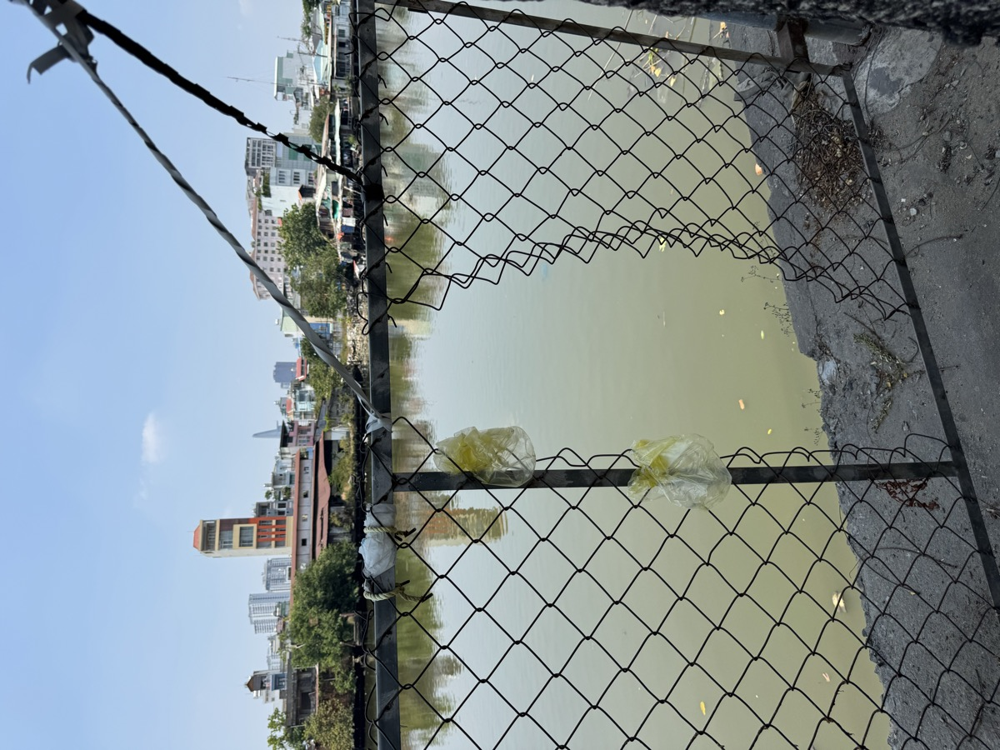
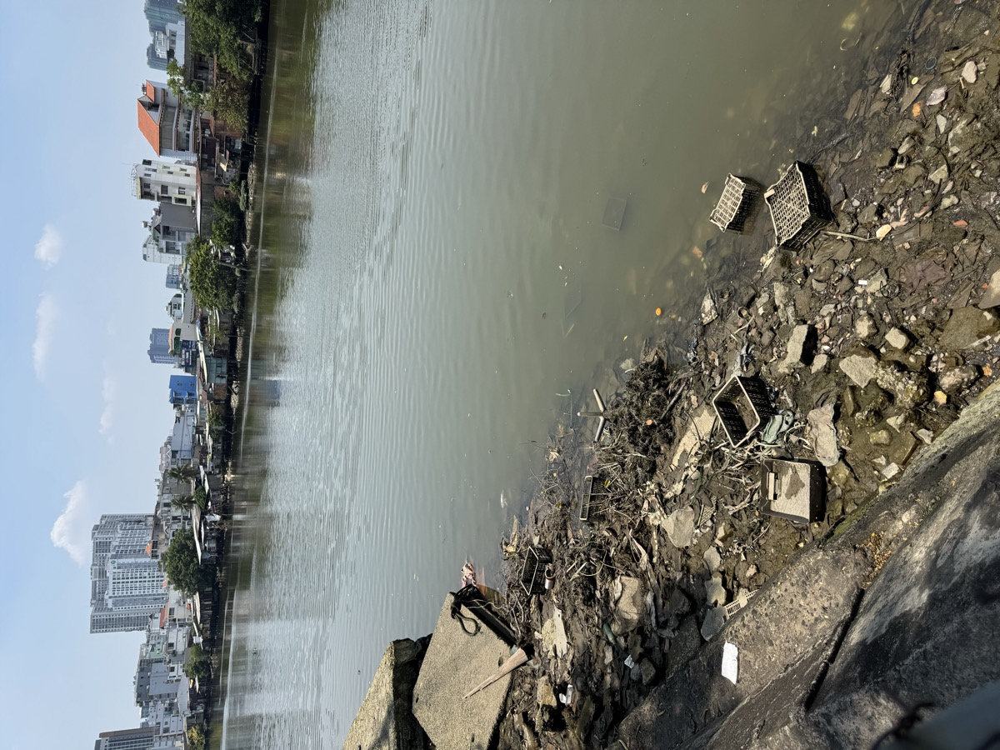
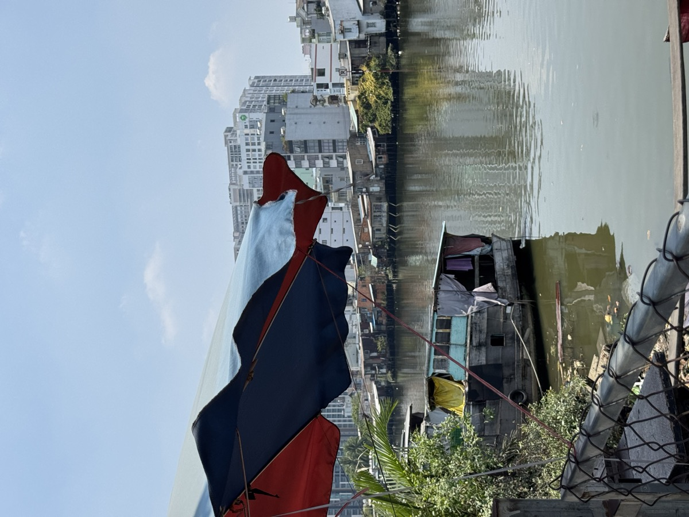
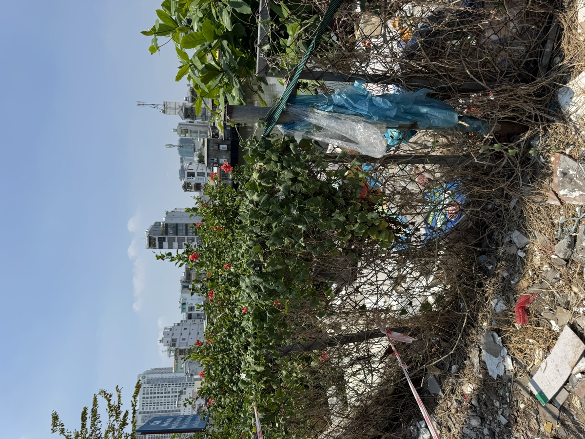
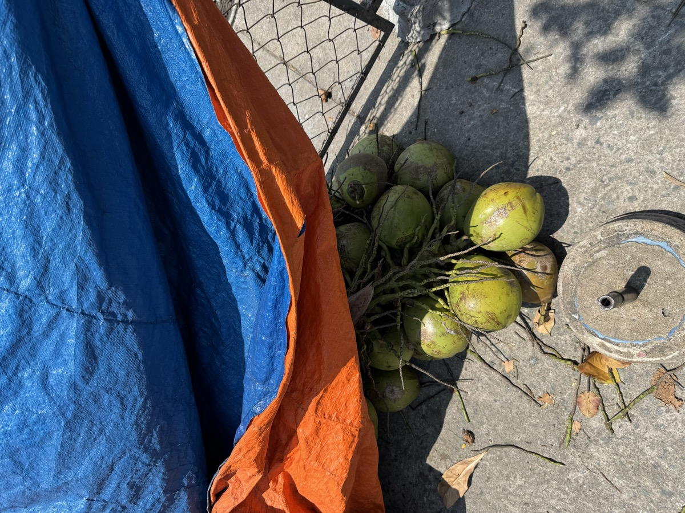

Lọc
Filter · Strain · Purify
Kênh Tẻ · Ho Chi Minh City
10.7539° N · 106.6983° E
Point at the print →
Point your camera at the cyanotype print
to activate the canal layer
Lọc
10.7539° N · 106.6983° E · Kênh Tẻ
Point camera at the cyanotype print




